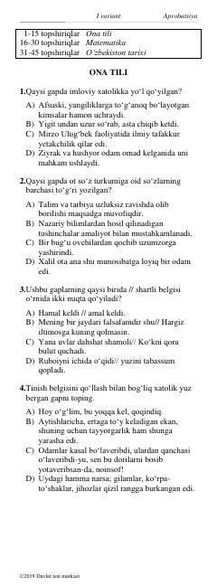

MTOna tili, matematika va O'zbekiston tarixi fanlaridan majburiy testlar to'plami.
Ushbu qo'llanma ona tili, matematika va O'zbekiston tarixi fanlaridan majburiy test topshiriqlarini o'z ichiga oladi. Test materiallari abituriyentlar va o'quvchilarga imtihonlarga tayyorgarlik ko'rishda amaliy yordam beradi. Savollar turli mavzularni qamrab olib, bilimlarni sinovdan o'tkazish uchun mo'ljallangan.